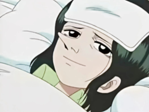
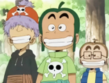
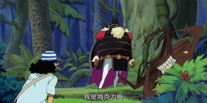
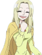

人际关系 |
简介 |
耶稣布乌索普的父亲，身份为红发海贼团的狙击手，在乌索普童年时期接受香克斯的邀请而出海。耶稣布的一句话：“因为海贼旗在召唤我”让乌索普非常憧憬，最后也踏上了海贼之路。乌索普很好的继承了耶稣布的狙击天赋。 |
|
|  |
班奇娜乌索普的母亲，东海西罗布村的村民，在乌索普的童年时期因病过世。乌索普继承了母亲的长鼻子基因。 |
|  |
乌索普海贼团乌索普在西罗布村的手下，青椒头&萝卜头&洋葱头四人组成了乌索普海贼团，三人的梦想分别是成为一流的木匠、经营一家酒店和成为一名小说家。在乌索普准备出海前，被乌索普流着泪宣布解散。 |
|  |
海克力斯海克力斯是乌索普在波音列岛（乌索普被熊排飞后到的岛屿）遇到的，顶上战争后的两年间，乌索普在海克力斯的指导下，在波音列岛锻炼身体并学习“POP GREEN”的运用。 |
|  |
可雅乌索普的青梅竹马。是西罗布村里大户人家的千金，特征是一头俏皮的淡金色头发和不离手的书。因乌索普的缘故一发不可收拾地学起了医学。笑容甜美，性格温顺也是村庄中许多追求者倾慕的特点。 |